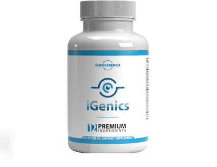
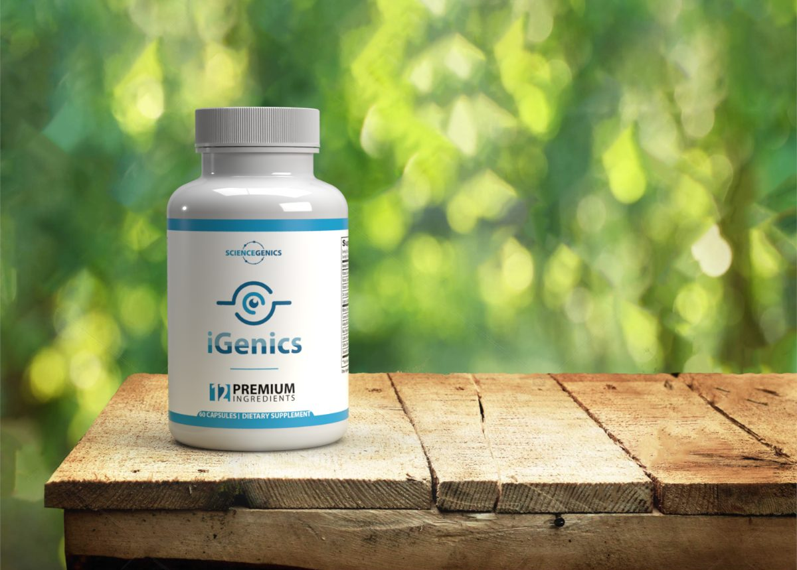
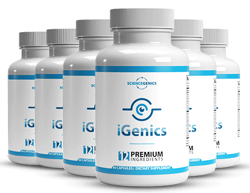
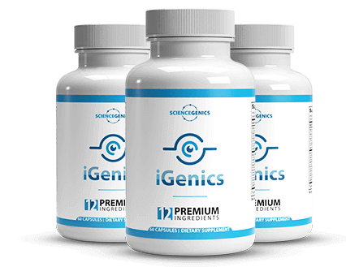

-
20MAmericans over 40 with some macular degeneration
-
4,700people followed in the original AREDS trial
-
25%lower risk of progression over five yearsIn participants who already had intermediate disease
-
180days to return it if it does nothing for you
The problem
Two dozen bottles. One tested formula.
Small print held a little farther out each year. Headlights that scatter into starbursts. A screen that leaves your eyes dry by four in the afternoon.
If that sounds familiar, you are in very ordinary company — and you are about to go looking for help in the one aisle of the pharmacy where almost nothing has been tested.
Most eye supplements are guesswork in a capsule. One formula is not. Knowing which is which takes about ten minutes, and this page is those ten minutes.

See it for yourself
What age-related vision change actually looks like
The same scene, four conditions. Tap to switch.
Normal vision. Detail is sharpest at the centre of the field — the part of the retina this whole page is about.
The evidence
The one formula that was actually tested
A decade-long trial funded by the National Eye Institute, part of the NIH.
In 1992 the National Eye Institute began an unusually large study: the Age-Related Eye Disease Study, or AREDS. Roughly 4,700 people, followed for years, to answer one question — can a specific combination of nutrients slow macular degeneration?
The 2001 answer was a qualified yes. Among participants who already had intermediate disease, the formula cut the risk of progressing to advanced macular degeneration by about 25 percent over five years. Not a cure, and never presented as one. But a real, measured effect from a real trial — which puts it in a category almost nothing else on the shelf can claim.
A follow-up, AREDS2, reported in 2013. It replaced beta-carotene with lutein and zeaxanthin, because beta-carotene had been linked to higher lung cancer risk in smokers and former smokers. The swap worked at least as well and removed that risk. That is the formula ophthalmologists still reference today.
The six nutrients, at the amounts that were tested
Beyond the trial
What AREDS2 leaves out
AREDS2 was designed around one disease. It says nothing about the complaint that actually sends most people looking: eyes that ache and blur after a long day.

-
Lutein + zeaxanthinMacular pigment density, glare recovery, contrastStrong
-
BilberryEye fatigue from close and screen workModerate
-
SaffronRetinal function in early macular degenerationPreliminary
-
Ginkgo bilobaOcular blood flow; visual field in some glaucoma patientsPreliminary
-
Curcumin (turmeric)Protection of retinal nerve cellsLab only
-
Piperine (black pepper)Raises absorption of curcuminEstablished
Ginkgo biloba
Ginkgo biloba L.
Studied mainly for ocular blood flow and visual fields in normal-tension glaucoma. Small studies, mixed results.
Bilberry
Vaccinium myrtillus
Its anthocyanins have been tested against eye fatigue in people doing sustained screen work. Modest effects, consistent direction.
Saffron
Crocus sativus
Italian groups have run small trials at about 20 mg a day, measuring retinal sensitivity in early macular degeneration. Promising, unproven.
Why black pepper appears on eye-supplement labels. Curcumin protects retinal cells in the lab, but on its own it is absorbed so poorly that most never reaches the bloodstream. Piperine, from black pepper, raises that absorption dramatically. A turmeric supplement without it is largely wasted.
Before you buy
Five things to check on any label
You do not need to be a chemist. You need five answers, and all of them are printed on the supplement facts panel.

- The complete AREDS2 group All six — vitamin C, vitamin E, lutein, zeaxanthin, zinc, copper. Products carrying two or three of them are borrowing the credibility of a trial they do not match.
- Zinc paired with copper High-dose zinc depletes copper over time. The trial included copper for exactly this reason. High zinc with no copper is a formulation mistake, not a shortcut.
- A lutein-to-zeaxanthin ratio near 10 to 2 That is the ratio that was tested. Wildly different ratios are untested territory.
- Extras with at least early human data Bilberry, saffron and ginkgo qualify. A long list of botanicals with no human research is padding, designed to make the label look impressive.
- A return window long enough to actually judge it This is the one most people skip. Macular pigment changes over months, not days — studies of this kind run three to six months before measuring anything. A 30-day guarantee expires long before you could know whether a product did anything for you, which from the seller's point of view is rather convenient.
One formula meets all five
iGenics carries the full AREDS2 group plus the researched extras — and backs it with a 180-day return window.
- 180-day guarantee
- 12 ingredients
- 2 capsules a day
Opens the manufacturer's official page in a new tab.
The product
Running the checklist on iGenics
Twelve ingredients, sold direct by the manufacturer, 60 capsules a bottle.


(assets/img/bottle-1.png)
iGenics
- 60 capsules
- 2 a day
- 1 month per bottle
- Not sold in stores
Ginkgo biloba, bilberry, saffron, lutein, zeaxanthin, vitamins A, C and E, zinc, copper, turmeric extract and black pepper extract. The manufacturer, Science Genics, reports having sold to more than 15,000 customers.

- Complete AREDS2 group — vitamins A, C and E, lutein, zeaxanthin, zinc, copper
- Zinc paired with copper
- Researched extras — bilberry, saffron, ginkgo biloba
- Absorption handled — turmeric paired with black pepper extract
- 180-day return window — refund without returning the bottles
Pricing
Set by the manufacturer. Confirm current figures on the official page.
- Trial quantity
- 180-day guarantee

- Covers a full study-length window
- Bonus items included
- 180-day guarantee

- Minimum sensible trial
- 180-day guarantee
The practical point is checkpoint five. A single bottle is thirty days, and thirty days is not long enough to judge a nutrient that works on a months-long timescale. If you are going to try this properly, a three- or six-month quantity is the honest minimum — and the 180-day guarantee is what makes that a reasonable risk rather than a gamble.
The other side
Who should not take this
An honest recommendation includes the people it is wrong for.
- You take a blood thinnerGinkgo can affect clotting and interacts with warfarin and similar drugs. The most important interaction on this list.
- You have surgery scheduledSame reason. Most surgeons ask you to stop ginkgo and high-dose vitamin E well beforehand.
- You already take a multivitamin or eye formulaZinc and vitamin A stack, and both have upper limits. Take both labels to a pharmacist rather than guessing.
- You are pregnant or nursingHigh-dose vitamin A is not appropriate.
- You want to stop wearing glassesNo supplement corrects refractive error. Glasses correct how light focuses; nutrients support the tissue doing the seeing. Two different problems.
- You have not had a dilated eye exam recentlySudden or worsening blur can signal conditions that need treatment, not nutrition. Get looked at first.
Questions
Common questions
How long before I would notice anything?
Longer than most advertising suggests. Studies measuring macular pigment or retinal function typically run three to six months before taking a reading. Some people report less end-of-day eye fatigue sooner, which is the bilberry side of the formula rather than the AREDS2 side. Plan on months, and judge it against the guarantee window rather than a first impression.
Is it FDA approved?
No dietary supplement is. The FDA does not approve supplements before sale — it regulates manufacturing and can act after the fact. Anyone telling you their supplement is FDA approved is either confused or misleading you.
Can I buy it on Amazon or at a pharmacy?
No. It is sold direct by the manufacturer through their own checkout, handled by the payment processor Digistore24. That is also why the guarantee is administered by the seller rather than a retailer.
How does the 180-day guarantee actually work?
The manufacturer states a full refund within 180 days of purchase, and that you do not need to send the bottles back. Refunds are requested through the checkout provider that processed your order. Keep the confirmation email — it carries the order number you will need.
Is this the same as the AREDS2 supplement my eye doctor mentioned?
It contains the AREDS2 group and adds ingredients that were not part of that trial. If your ophthalmologist recommended AREDS2 specifically for diagnosed macular degeneration, follow their guidance and show them this label before switching.
Read the panel, then decide
The AREDS2 group has a measured effect on the progression of existing disease. Bilberry, saffron and ginkgo have early human data worth taking seriously. And nothing in a capsule will hand you back the eyes you had at thirty.
- 180-day money-back guarantee
- Sold direct, not in stores